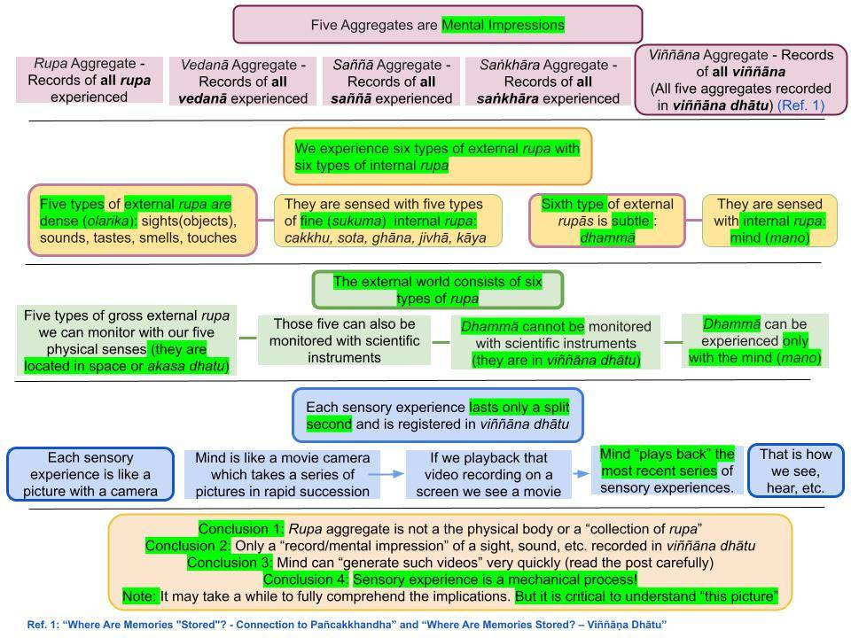

Five Aggregates (pañcakkhandha or pañca khandha) is not one's own body, as some believe. All five components arise in the mind as pañca upādāna khandha (or pañcupādānakkhandha) in response to a sensory input.
Re-written April 17, 2020; rewritten with new chart, March 9, 2023; revised September 3, 2024
Definition of the Five Aggregates

Download/Print: Chart #5. Five Aggregates - Mental Impressions
1. Five aggregates (pañcakkhandha) are unique to each sentient being. We can see that by carefully analyzing a short sutta about the five aggregates: "Khandha Sutta (SN 22.48)." (Ref. 1)
"And what are the five aggregates?"
- "Any kind of rupa at all—past, future, or present; ajjhatta or bahiddha; coarse or fine; inferior or superior; far or near: this is called the aggregate of rupa."
- "Any kind of vedanā at all—past, future, or present; ajjhatta or bahiddha; coarse or fine; inferior or superior; far or near: this is called the aggregate of vedanā."
- "Any kind of saññā at all—past, future, or present; ajjhatta or bahiddha; coarse or fine; inferior or superior; far or near: this is called the aggregate of saññā."
- "Any kind of saṅkhāra at all—past, future, or present; ajjhatta or bahiddha; coarse or fine; inferior or superior; far or near: this is called the aggregate of saṅkhāra."
- "Any kind of viññāṇa at all—past, future, or present; ajjhatta or bahiddha; coarse or fine; inferior or superior; far or near: this is called the aggregate of viññāṇa."
Therefore, each aggregate comprises 11 types: past, future, or present; ajjhatta or bahiddha; coarse or fine; inferior or superior; far or near.
Brief Description of the 11 Types of Rupa
2. A set of rupa, vedanā, saññā, saṅkhāra, and viññāṇa arise whenever the mind makes contact with an external (bāhira) rupa. Those can be of six types: vaṇṇa rupa, sadda rupa, gandha rupa, rasa rupa, phoṭṭhabba, and dhamma rupa (in plain English, sight, sound, smell, taste, touch, and dhammā.) Note that "vaṇṇa rupa" are also called "rupa rupa" or simply "rupa." Thus, depending on the context, one must be able to see what "rupa" means. Six types of internal rupa (one's sensoe faculties): They are cakkhu, sota, ghāna, jivhā, kāya, and mana. Note that these six are in the manomaya kaya (gandhabba) first five are pasāda rupa, and the sixth is hadaya vatthu. They make contact with the six external rupa. The Buddha called these 12 types of rupa to be "all" because all experiences in this world arise via them; see "Sabba Sutta (SN 35.23)."
- The ajjhatta and bahiddha rupa are not the same as external and internal rupa. I will explain that in a new series of posts.
- Rupa we can see are coarse rupa. The others (particularly the six internal rupa and dhammā) belong to the "fine rupa" category.
- Any rupa in the "good realms" are "superior rupa," and those in the lower realms are "inferior rupa."
- When one thinks about close-by rupa, those are "near rupa." When one contemplates far away rupa, they are "far rupa."
- All those eight types of rupa can belong to past, future, or present categories. "Past rupa" are those one has experienced in the past; as we can see, this category is infinite since there is no beginning to the rebirth process. The "present rupa" category is the smallest since it lasts only while a rupa is experienced. "Future rupa" is a bit complex category. Our future experiences are automatically "mapped out" according to the present status of the mind. However, it is a dynamic set that keeps changing. Only when a Bodhisatta gets "niyata vivarana" to become a Buddha will his future become fixed. That explanation requires a separate post.
- The other four aggregates similarly fall into the same 11 categories. For details, see "The Five Aggregates (Pañcakkhandha)."
How Do the Five Aggregates Arise?
3. It is a sensory experience that triggers a "new addition" to the set of five aggregates. For example, "seeing an object" means the contact of an external rupa with an internal rupa.
- That leads to "vedanā" and "saññā" arising in mind automatically (to recognize the object and there is a vedanā associated with it). Then the mind generates "saṅkhāra" according to one's gati. That sensory experience is a "vipāka viññāṇa"; but if we generate abhisaṅkhāra, it can become a "kamma viññāṇa" too.
- That is a brief description of rupa, vedanā, saññā, saṅkhāra, and viññāṇa arising with each sensory event.
- Then, a record of that sensory event gets recorded in the "viññāṇa dhatu." That record is a "namagotta." If abhisaṅkhāra were involved, that record would also be associated with kammic energy, i.e., a "kamma bija" can bring vipāka in the future.
- This is a complex but fascinating process.
- As we can see, the accumulation of the five aggregates will stop only at the death of an Arahant. Since there is no rebirth, no more "internal rupa" to make sensory experiences! That may sound alarming but remember that each birth only leads to suffering, and most rebirths have unimaginable suffering.
One Type of Consciousness (Vipāka Viññāṇa) Arises With an Ārammana
4. We think of the mind as our own and are always present. But in reality, our consciousness arises based on two conditions.
- First, we must be awake. If someone is unconscious, no matter how loud we talk, he will not hear. No matter how hard we shake him, he will not feel. Our physical bodies shut down when unconscious (or in a deep sleep). Even though the "mental body/gandhabba" never sleeps, it does not get any sensory inputs from the brain.
- Second, one of our six senses must be stimulated by an external sight, sound, smell, taste, touch, or memory. The first five come through our five physical senses, and the sixth is the thoughts that come to our mind via the mana indriya in the brain; see "Brain – Interface between Mind and Body."
- An "external trigger" that initiates a new consciousness is called an ārammana. Such an ārammana comes to the mind via one of the "five physical doors" or directly to the mind. Then, one of the six consciousnesses (viññāṇa) arises. These are vipāka viññāṇa. They just come in due to prior kamma, as kamma vipāka.
- These types of vipāka viññāṇa arise via, for example, “Cakkhuñca paṭicca rūpe ca uppajjāti cakkhu viññāṇaṃ." See, "Contact Between Āyatana Leads to Vipāka Viññāna."
Second Type of Consciousness (Kamma Viññāṇa) May Arise Based on an Ārammana
6. If that external "thought object" or "ārammana" is interesting, we start generating CONSCIOUS THOUGHTS about that ārammana.
- At this point, our consciousness switches to a new type called a kamma viññāṇa. This new consciousness is more than mere "consciousness" or "awareness." We are interested in pursuing what we have seen, heard, tasted, etc.. and "getting more of those we liked."
- For example, a friend may offer a piece of cake, and the taste of that cake is a vipāka viññāṇa. But if we liked the taste of that cake, we may want to taste it again in the future. We may start thinking about buying or making it and asking that friend how to pursue those two possibilities. That future expectation is in the new type of kamma viññāṇa generated via "avijjā paccayā saṅkhāra."
- In other words, now we have gone beyond "just experiencing the taste of the cake" or the "vipāka viññāṇa." Now, we have a future expectation to taste it again with a "kamma viññāṇa" generated via our conscious thoughts (vaci saṅkhāra.)
- Stated in another way, we have initiated a Paṭicca Samuppāda process with "avijjā paccayā saṅkhāra" and "saṅkhāra paccayā viññāṇa." That viññāṇa is a kamma viññāṇa.
A Living Being - Body With a Mind Interacting With the External World
7. What we discussed above in summary form is what our lives are all about. We have a physical body and an invisible "mental body/gandhabba" with the "seat of the mind" (hadaya vatthu.) The physical body gets sensory inputs from the external world. Those are processed by the brain and passed to the "mental body/gandhabba." It is the hadaya vatthu (we casually call the "mind") that "feels/experiences" such sensory inputs. Then, we (our minds) pursue those sensory inputs we like and try to avoid those we do not like.
- In that process, we create new kamma that leads to the arising of a new body when the current body dies.
- Of course, the types of bodies that arise in future lives depend on the types of kamma that we do based on those sensory experiences. If one kills another person to acquire that person's wealth, one will be reborn in a bad realm (apāyā.) If one generates compassionate thoughts about hungry people and offers them food, one may be reborn in a good realm.
- That is how the rebirth process continues.
Rupa Versus Rupakkhandha
8. The Buddha included all types of matter encountered at any time in one giant "collection" or "aggregate." That is the "rupa aggregate" or "rupa khandha" or "rūpakkhandha."
- That means what is in the rūpakkhandha is not real (physical) rupa. Whatever is observed becomes a mental imprint or a "memory record" moments after observation. See the next post in the series: "Difference Between Physical Rūpa and Rūpakkhandha."
- The Buddha divided the mind or "mental aspects" into four categories: vedanā, saññā, saṅkhāra, and viññāṇa. These entities arise and fade, but a record of them exists (going back to an untraceable beginning.) Those "collections" or 'aggregates" are vedanākkhandha, saññākkhandha, saṅkhārakkhandha, and viññāṇakkhandha.
Rupakkhandha Is Not Stored Directly
9. It is critical to realize that a "rupa" cannot be stored in the viññāṇa dhatu. Only a "mental imprint" of a rupa gets stored. That "mental imprint" is in the four "mental aggregates." Let us briefly discuss that.
- When we see an object, its shape, colors, etc., are perceived by the mind with the saññā aggregate. Our feelings about it are in the vedanā aggregate, and any action we took is in the saṅkhāra aggregate. Finally, our expectations for such rupa are in the viññāṇa aggregate.
- That process is discussed in detail in "Where Are Memories “Stored”? – Connection to Pañcakkhandha" and "Where Are Memories Stored? – Viññāṇa Dhātu" (Ref. 1 in the chart). However, a good grasp of the concept of the five aggregates is needed, as explained in "The Five Aggregates (Pañcakkhandha)" and "Paṭicca Samuppāda During a Lifetime."
The Five Aggregates Describe any "Living Being"
10. As we will see, a sentient being's entire existence (through uncountable rebirths) and experiences can be described entirely with those five aggregates. The Buddha showed that those five entities arise and fade away in a manner fully explained in terms of causes and their effect. There is no hidden "soul" or an "ātman."
- However, at any given time, there is a "person" with a set of gati (habits/character) responsible for the actions done at that time. It is not an automated process. That is why we cannot say there is no 'self' up to the Arahant stage. There is a "self" doing things on his/her own. Of course, only until seeing the futility of such "doings" or "(abhi)saṅkhāra."
- That last bullet point is what we need to understand. This time, we will discuss that systematically with a slightly different approach in the new series "Buddhism – In Charts." However, this series is only a systematic way to arrange previously published posts while making connections among posts in different sections. It is imperative to read the posts linked above. Buddha Dhamma is deeper than the deepest ocean. One can go into it as deeply as one wants, provided one is willing to spend the time. But what we discuss will be essential parts.
Summary
11. We have laid the framework to examine the conscious life and the rebirth process based on the five aggregates or pañcakkhandha. Please read and understand the whole section on "The Five Aggregates (Pañcakkhandha)." I will discuss memory formation, storage, and extraction in the next post before we connect it all to Paṭicca Samuppāda.
- In this analysis, the whole world is divided into just five categories. One is the rupa aggregate, the "collection of MEMORIES of all rupa" or the rūpakkhandha. That includes memories of all "material objects," including our physical bodies and all external objects one has seen in all previous lives. We will discuss that in the next post.
- The other four aggregates or "heaps" or "collections" of four types of mental entities: vedanā (feelings), saññā (perception), saṅkhāra (thoughts of speech and actions), and viññāṇa (vipāka viññāṇa or kamma viññāṇa.)
- I have discussed this topic in detail in "Paṭicca Samuppāda During a Lifetime."